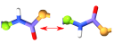
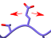

(Semi-)Automated Manipulations¶
Peptide_Bond_Flipper¶

- class
chimerax.isolde.manipulations.Peptide_Bond_Flipper(isolde, residue)¶Responsible for flipping a peptide bond by adding temporary phi and psi restraints 180 degrees away from their starting angles. Automatically removes the restraints and deletes itself once satisfied, or when unable to satisfy the restraints after a number of steps defined by
SimParams.peptide_flipper_max_rounds. On failure, a warning is printed to the ChimeraX log. If the restraints are satisfied to withinSimParams.dihedral_restraint_cutoff_anglewithin the step limit, a “polishing” phase is triggered in which the restraint cutoff angles are reduced to zero and maintained for ten coordinate updates, at which point the restraints are released. There is no real need to keep a handle to aPeptide_Bond_Flipperinstance - just fire and forget.
__init__(isolde, residue)¶Initialisation immediately starts the peptide flipping process. Adds a handler to the
chimerax.AtomicStructure.triggers‘coord update’ trigger to check its progress and make decisions after each coordinate update.
- Args:
- isolde:
the current
Isoldesession
- residue:
a currently-mobile
chimerax.Residue
Protein_Register_Shifter¶

- class
chimerax.isolde.manipulations.Protein_Register_Shifter(session, isolde, atoms)¶In models built into low-resolution maps it is quite common to find stretches of the protein chain that have been built out of register - that is, the fold is more-or-less correct, but the residues are one or more steps forward or backward along the chain from where they should be. It can be a difficult and frustrating task to fix such problems via purely manual methods, but a little scripting can help simplify the task substantially.
Protein_Register_Shifteraddresses the task by first calculating four 3D parametric splines (through the coordinates of the N, CA, C and CB (or HA3 for glycine) atoms of the problem residues respectively). These splines are then used to define the positions of position restraints for each N, CA, C and CB, which move smoothly along the spline traversing one register position for every ten coordinate updates. This provides a smooth transition from starting to final positions, avoiding any risk of clashes or excessive forces. When the traversal is finished the restraints will remain in place untilrelease_all()is called, allowing the user to check and correct local geometry before releasing.Note that checkpointing of the simulation is blocked while a
Protein_Register_Shifteris active. The block will be released whenrelease_all()is called.
__init__(session, isolde, atoms)¶Initialise the object, including creating the splines from the current coordinates. No restraints are applied at this stage.
- Args:
- session:
the ChimeraX master session object
- isolde:
the
Isoldesession
- atoms:
a
chimerax.AtomicStructureinstance. All atoms must be mobile, and from a single contiguous stretch of peptide chain. All unique residues in the selection will be chosen for shifting
release_all()¶Release all restraints and clean up. Once this is run this object should no longer be used.
shift_register(nres)¶Shift the atoms in register by the given number of residues. A positive nres yields a shift towards the C-terminus, while a negative nres gives a shift towards the N-terminus. Residues that fall off the end of the target region will become unrestrained, while residues that enter the start will become restrained.
- Args:
- nres:
an integer
Backrub¶
-
refine.apply_backrub(mdff_mgr, residue, clash_weight=0.5, focus=False)¶ Attempt to automatically fit a protein sidechain into density using the backrub algorithm (https://doi.org/10.1093/bioinformatics/btn169).
- Args:
- isolde:
pointer to the main ISOLDE session
- mdff_mgr:
a
MDFFMgrobject managing the map into which the sidechain is to be fitted.
- residue:
a
Residuedefining the residue to be fitted.
- clash_weight:
weighting factor to apply to atomic clashes when scoring poses
- focus:
do we want to focus the view on the residue?
-
class
chimerax.isolde.refine.Backrub(residue, density_map, clash_weight=0.1, map_weight=1)¶ Automatically fit a protein sidechain into density using the Backrub algorithm (Davis et al. 2006, Structure 14: 265-274)
-
__init__(residue, density_map, clash_weight=0.1, map_weight=1)¶ Prepare an amino acid residue for rotamer refitting, performing some basic sanity checks along the way. When fitting, each pose will be scored for both clashes with surrounding atoms and fit to density, with user-adjustable weights.
Args:
- residue:
a
chimerax.atomic.Residueinstance. Will raise aTypeErrorif not a complete, rotameric amino acid residue
- density_map:
a
chimerax.map.Volumeinstance. If the residue does not fall completely within the extent of the map, aRuntimeErrorwill be raised.
- clash_weight (default=0.1):
weight to apply to the clash term when scoring poses
- map_weight (default=1):
weight to apply to the density fit term when scoring poses
-
auto_fit()¶ Attempt to automatically find the rotamer that best fits the density. Will set the coordinates of the residue to the best solution it finds. If you wish to be able to revert to the original coordinates, it’s up to you to save them first.
-